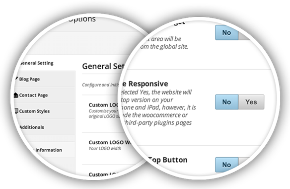

Frab dm
La Liberté guidant le peuple
La Liberte guidant le peuple est une huile sur d'Eugene Delacroix realisee en 1830, inspisee de la
revolution des Trois Glorieuses qui s'est passee en 1830. Presentee au public au Salon de Paris de 1831
sous le titre Scenes de barricades
revolution des Trois Glorieuses qui s'est passee en 1830. Presentee au public au Salon de Paris de 1831
sous le titre Scenes de barricades
Posterite de l'oeuvre
-
1.Situee dans la salle Mollien, au musee du Louvre,
loeuvre est plusieurs fois deplacee pour etre pretee a des
expositions temporaires : une premiere fois a Tokyo
(Japon) en 1999 et une autre a Strasbourg en 2004. -
2.Situee dans la salle Mollien, au musee du Louvre,
loeuvre est plusieurs fois deplacee pour etre pretee a des
expositions temporaires : une premiere fois a Tokyo
(Japon) en 1999 et une autre a Strasbourg en 2004. -
3.Situee dans la salle Mollien, au musee du Louvre,
loeuvre est plusieurs fois deplacee pour etre pretee a des
expositions temporaires : une premiere fois a Tokyo
(Japon) en 1999 et une autre a Strasbourg en 2004.
Notre Equipe

craig garner ceo
Amazone blessee du type de Sosikle's. Copie romaine d'apre's
un original grec Elle rassemble le peuple, les faubourgs et la
bridge roberts creative genius
Amazone blessee du type de Sosikle's. Copie romaine d'apre's
un original grec Elle rassemble le peuple
malade garner chef de projet
Amazone blessee du type de Sosikle's. Copie romaine d'apre's
un original grec Elle rass
our features
Visual Composer
Page Builder
Page Builder
We include Visual compaster plugin thead the a user two create complecs loayt witch
visuil page builder, you djast need and gruup the elemens are vidgets to the
page bulder interface easily.
visuil page builder, you djast need and gruup the elemens are vidgets to the
page bulder interface easily.

Customize &
Live Preview
Live Preview
We include Visual compaster plugin thead the a user two create complecs loayt witch
visuil page builder, you djast need and gruup the elemens are vidgets to the
page bulder interface easily.
visuil page builder, you djast need and gruup the elemens are vidgets to the
page bulder interface easily.
what's the bzz?
Wath our clients tolking ebout our poducts our services. This is only en exam-
ple tu show a you curent block effects head. georg clooney
portfolio